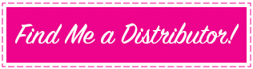

and—best of all—anybody can install any of the pieces right at home.
- Why Instant Hair?
- What It'll Do for You
- Why your clients will love them
- Tips to Sell
- Products
- Salon Packages
Temporary hair extensions and clip-in bangs—once a supermodel and celebrity secret—are now in the hands (and hair) of women everywhere! Fashion and beauty blogs have recently beenshowcasing the marvelous conveniences of temporary hair, and women are scrambling to find them.
Bring in Extra Money! Women are wanting to try temporary hair extensions and bang pieces but are hesitant to purchase online for fear of choosing the wrong color or a poor-quality product. Beauty blogs and magazines are urging women to find local salons (that's you!) that carry reliable, superior hair extensions and clip-in bang products (that's us!), because salons can provide both the retail and necessary styling services—such as coloring, cutting, and blending.
Providing Babe Instant Hair in your salon is a smart move for increasing retail profits. Just take a peek at this:
$450-600 monthly profit from coloring services
$150-300 monthly profit from cutting and blending services
$30-50 monthly profit from complementary product sales
upwards of $200 monthly profit from styling services
upwards of $200 monthly profit from maintenance services and hair treatments
over $1,000 in added monthly income to your salon business!
It will also Elevate your Salon—What do elite, successful salons have in common? Exclusive products and services. Differentiate your establishment by being one of the few select salons in your area providing both styling services and Babe Instant Hair products for happy clients to purchase and take home.
• Offer variety with your products:
• Hair extensions are all the rage right now, but not everyone wants a permanent fix. There are always clients wary of commitment, pain, or change.
• Babe Instant Hair offers the same instantaneous benefits as permanent extensions but without the long installment process, scary bang-snipping, or a stationary hairstyle. It's a more versatile alternative.
Options, Options, Options!
Supplying both Babe permanent extensions and Babe Instant Hair will broaden your salon services and allow you to reach double the clientele, so you'll have something to fit each client's particular hair needs.
• Adventurous women who love to try new hairstyles will be perfect customers for Babe Instant Hair, along with those who are weary of commitment and maintenance.
• Also, clients who shy away from professional extensions—whether because of anxiety or a poor experience—can still be retained with Babe Instant Hair.
• Even women with much shorter hair can enjoy hair extensions—specifically with the Babe Clip-In Bangs, which free them from the stress and maintenance that comes with actual bang-cutting. Babe Bangs can offer a very simple, easy way to add a full chic fringe or luscious side sweep, providing a completely new hairstyle in seconds.
• You're already offering Babe's professional methods, which are perfect for women seeking immediate volume and length who want to enjoy their new hair for months at a time; and though plenty of women are interested in achieving instant length and volume, many are hesitant to commit to drastic changes. Babe Instant Hair is the prime choice for impatient clients who want immediate end results without spending a lot of time or money, and without making open-ended commitments.
• Maintenance for long hair requires serious dedication and vigilance—regardless of whether the hair is real or fitted with extensions. There are many women who, though interested in and drawn to the long-hair/mermaid look, already know they aren't fit for the constant upkeep of long locks. Babe Instant Hair is the perfect product for these clients as they allow anyone to go from short hair to long hair in minutes. The simple Clip-Ins and Crown pieces allow anyone to enjoy the benefits of long hair without the maintenance and upkeep. Your client can simply take them out at the end of the day!
• Babe Instant Hair is also a fantastic option for those trying to save money and time in the salon. They'll still need a stylist's help for cutting the Bangs and perhaps coloring or feathering the extensions and Crown pieces, but beyond that they have full control when taking their Instant Hair home. It's a great advantage for the more independent women out there, and a definite advantage to your salon’s business.
• There are some older women who are perfect clients for Instant Hair as well. As we age, our hair thins and loses volume. For mature women who want to retain their youthful look and style, Babe Clip-In pieces could do just the trick. Plus, they’re great for boosting self-esteem. Clip-Ins are incredibly easy for anyone to apply, and are commitment-free.
• Lastly, Babe Instant Hair will come to the rescue for any unfortunate hair situation. If a client enters your salon in complete distress from a botched haircut she's received from someone else, you can come to the rescue with Babe Instant Hair. Turn back time by adding immediate length and volume, or bangs. The clip-ins allow control by covering and smoothing over choppy areas, the crown extensions add tremendous volume and length instantly, and bangs cover awkward-growing baby hairs or uneven framed cuts. Just a few clips and, voilà, your client's a vision again, and you're the new hero!

They’ll enjoy the same great benefits found with our permanent extensions:
• 100% Human hair
• Instant volume and length to hair
• Can be styled using flat iron, curling wand, or blow dryer
• Can be colored darker by stylist to match natural hair
...as well as these benefits exclusive to Babe Instant Hair:
• Versatility: changeable styles between day and night, week and weekend!
• Easy Installation: attaches in a matter of minutes, and extensions stay firmly in place all day.
• Works with All Hair Lengths: from chest-length to shoulder-length hair to pixie-cuts! Adding Clip-In Extensions, Bangs, or an easy Crown brings fun, dramatic changes for any client who wants to spice up their look or experiment with their hairstyles.
• Removable and Reusable: Clip-In extensions allow hairstyles to easily fluctuate in length, style, & volume.
• Long-Lasting: all hair pieces are reusable and can last up to a year when properly cared for.
• Hassle and Pain-Free: simple, DIY, easy maintenance for any skill level.
• Less Tugging and Stress on Natural Hair: this one speaks for itself!
It's Easy! Here are a few simple steps that can place these irresistible products right in front of your clients' noses:
• Encourage the stylists in your salon to wear some of the Instant Hair pieces. Clients are much more likely to make a purchase when they see someone professional rocking the product!
• Have copies of our Look Book—an extensive catalog full of details on the Babe Instant Hair products—sitting on tables in your waiting area near the display.
• Take before & after photos of clients with Babe Bangs, Clip-Ins, or Crown pieces and share on social media!
• Begin collecting these photos and build a portfolio or stylebook of your clients wearing the Babe Clip-Ins, demonstrating the amazing transformations. This will promote both the retail product and your salon’s excellent hair extension services!
• Encourage clients to take selfies of their new instant hair and tag your salon on Instagram and Facebook!
• Promote Babe Instant Hair during homecoming or prom season. Girls will flock at the chance to have instant, perfect hair for their big night!
• Aim towards younger ages. Teens and younger women LOVE experimenting with hair and are more likely to try new products that produce quick and dramatic change.
• Have examples/promotions of bridal hair with Babe Instant Hair. Girls are always keeping an eye out for wedding hair ideas, and instant hair could be the perfect answer for making a future bride’s dream look come true.